IPAS · Kelas 5 SD/MI · Semester 1Science & Social Studies (IPAS) · Grade 5 · Semester 1
Belajar IPAS sambil bertahan hidup di Pulau WonorejoLearn science by surviving on Wonorejo Island
Survival Sains adalah game petualangan 3D. Siswa terdampar setelah badai, belajar dari sembilan Penjaga
pulau, lalu menyalakan Mercusuar Tua supaya bisa pulang. Setiap bab IPAS langsung dipakai untuk bertahan.
Survival Sains is a 3D adventure game. Students are stranded after a storm, learn from the island's nine
Guardians, then light the Old Lighthouse to get home. Every science chapter is put to use for survival.
Lihat dasbor guru tanpa menyiapkan kelasSee the teacher dashboard without a class
Di Mode Guru, ketuk Lihat Contoh Kelas. Ada 31 siswa uji coba (token 1234) yang maju
sendiri, dan tombol kendali bisa dicoba.
In Teacher Mode, tap Lihat Contoh Kelas (sample class). 31 test students (token 1234)
progress on their own, and the class controls can be tried. The dashboard is in Indonesian.
Badai, pulau asing, dan satu mercusuarA storm, a strange island, and one lighthouse
Pemain adalah anggota termuda Kapal Ekspedisi Sains yang terdampar di Pulau Wonorejo. Untuk pulang, ia harus
menyalakan Mercusuar Tua di puncak pulau. Sembilan Penjaga masing-masing menyimpan bekal ilmu dan satu alat
survival.
The player is the youngest member of the Science Expedition Ship, stranded on Wonorejo Island. To get home,
they must light the Old Lighthouse at the top of the island. Each of the nine Guardians holds a piece of
knowledge and one survival tool.
Cahaya untuk keluar dari goa dan membuat sinyalLight to get out of the cave and signal for help
Bunyi untuk memanggil bantuanSound to call for help
Magnet untuk membuat kompasMagnets to make a compass
Listrik untuk menyalakan lampu mercusuarElectricity to power the lighthouse lamp
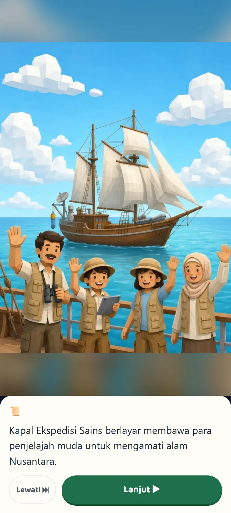
Cutscene pembukaOpening cutscene
Sebelas balai, mengikuti urutan bab bukuEleven halls, in textbook chapter order
Balai terbuka satu per satu. Kabut di balai berikutnya baru tersibak setelah balai sebelumnya lulus. Bab 9
dibagi menjadi tiga balai. Ketuk balai untuk melihat isinya.
Halls open one at a time. The fog over the next hall only clears once the previous one is passed. Chapter 9
is split into three halls. Tap a hall to see what is inside.
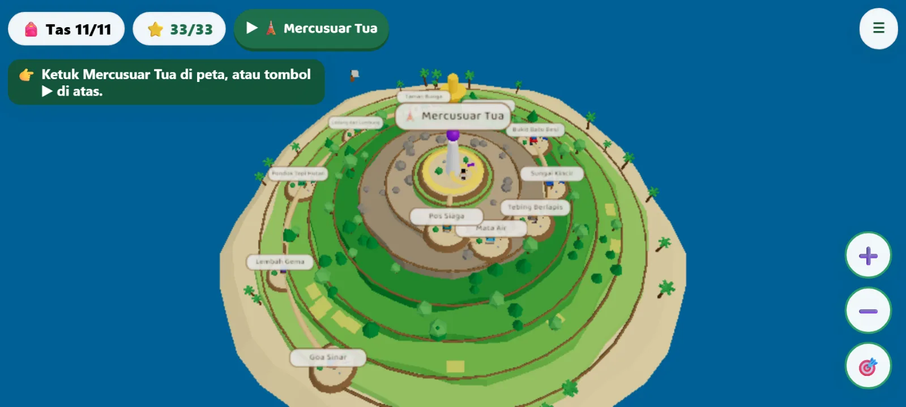
1Goa SinarBab 1 · Cahaya dan MataChapter 1 · Light and the Eye
PenjagaGuardian
Mbok Sinar
Alat survivalSurvival tool
🪞Cermin SinyalSignal Mirror
2Lembah GemaBab 2 · Bunyi dan PendengaranChapter 2 · Sound and Hearing
PenjagaGuardian
Ki Gaung
Alat survivalSurvival tool
🪘KentonganKentongan Drum
3Pondok Tepi HutanBab 3 · EkosistemChapter 3 · Ecosystems
Benda di gambar bisa diketuk untuk melihat namanya, dan muncul bergiliran.Objects in a scene can be tapped to show their names, and they appear one by one.
Gelombang bunyi digambar memancar, dengan warna berbeda untuk infrasonik, audiosonik, dan ultrasonik.Sound waves are drawn radiating out, coloured differently for infrasonic, audible, and ultrasonic sound.
Tiap materi ditutup dengan Kunci Ingat: diagram berikon, ringkasan, dan hikmah.Each topic ends with Key Points: an icon diagram, a summary, and a lesson of wisdom.
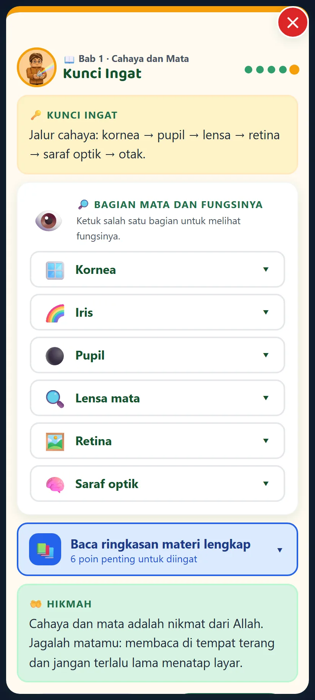
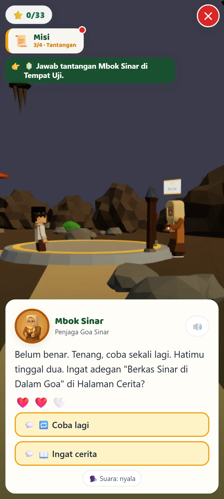
Salah itu bagian dari belajarMistakes are part of learning
Jawaban salah tidak langsung diberi kunci. Penjaga memberi petunjuk yang merujuk adegan cerita, lalu anak
bisa memilih Coba lagi atau Ingat cerita untuk membuka adegan itu. Jawaban benar diberi
penjelasan dari cerita.
A wrong answer never reveals the key. The Guardian gives a hint that points to a story scene, and the child
can choose Try again or Remember the story to reopen that scene. Right answers are explained
using the story.
Dua bahasa, dibacakan dengan suaraTwo languages, read aloud
Seluruh game tersedia dalam Bahasa Indonesia dan English. Narasi suara mengikuti bahasa yang aktif, dengan
nada dan kecepatan berbeda per tokoh. Teks tetap tampil walau suara dimatikan.
The whole game is available in Indonesian and English. Voice narration follows the active language, with a
different pitch and pace for each character. Text stays on screen when sound is off.
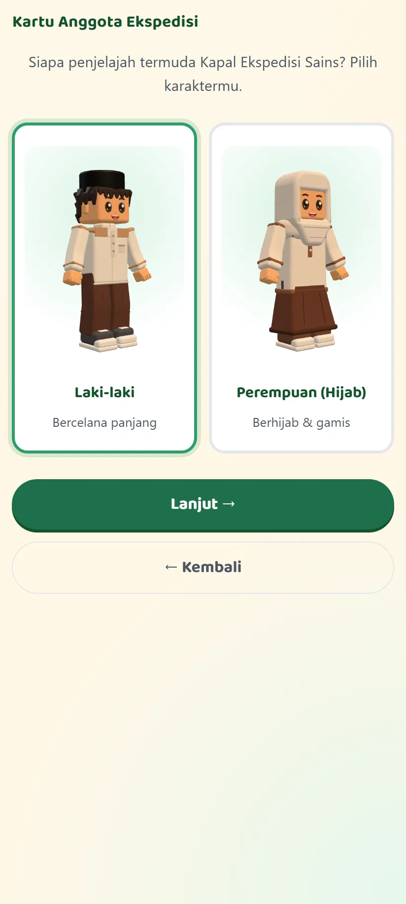
Bahasa Indonesia
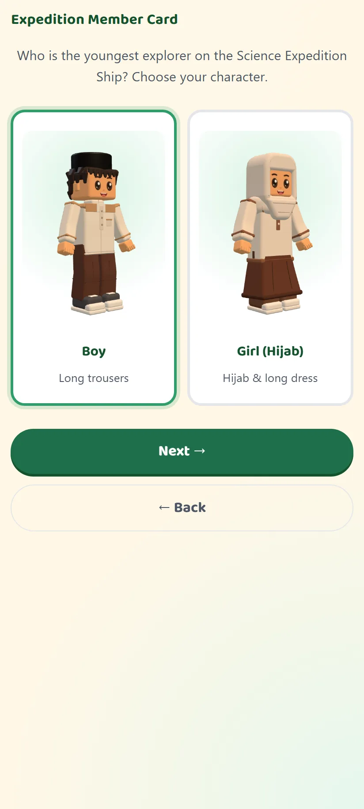
English
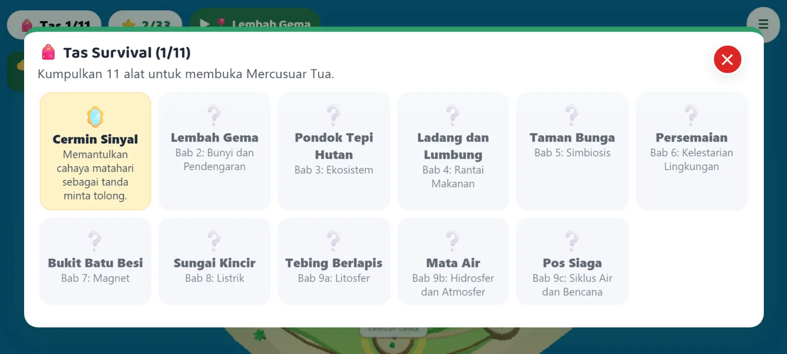
Tas Survival dan bintangSurvival Bag and stars
Sebelas alat, satu per balai. Mercusuar Tua baru terbuka setelah tas penuh. Bintang tiap balai menunjukkan seberapa lancar anak menjawab.
Eleven tools, one per hall. The Old Lighthouse only opens once the bag is full. Stars per hall show how smoothly the child answered.
Final: Malam Badai di Mercusuar TuaFinale: Storm Night at the Old Lighthouse
30 soal dari semua bab dalam 4 lantai. Lulus bila benar minimal 21 soal (70%). Bila belum lulus, cukup
mengulang lantai yang belum tuntas. Game ditutup dengan epilog dan sertifikat Penyintas Sains.
30 questions from every chapter across 4 floors. Passing needs at least 21 correct (70%). Players only
repeat the floors they have not finished. The game ends with an epilogue and a Science Survivor
certificate.
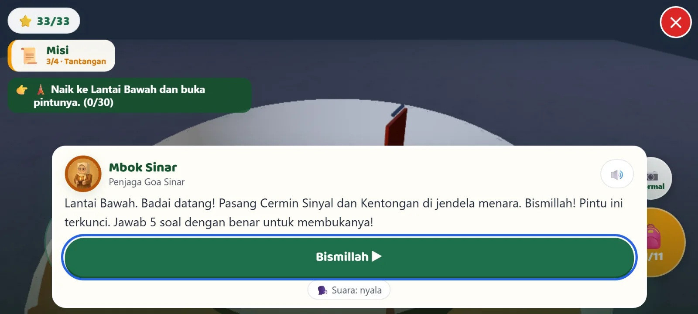
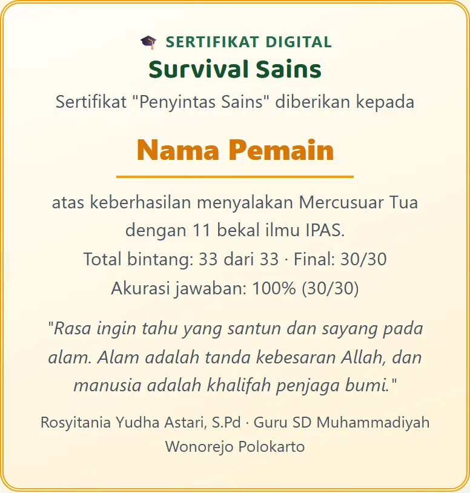
Sertifikat dari permainan uji sampai tamatCertificate from a full test playthrough (Indonesian)
Nyaman di HP sekolahComfortable on school phones
Kontrol sentuh dan joystick, mode ringan otomatis untuk HP dengan RAM kecil.
Touch controls and a joystick, plus an automatic light mode for low-memory phones.
Bisa dipasang dan main offlineInstallable, plays offline
Game bisa dipasang sebagai aplikasi (PWA). Mode sendiri tetap jalan tanpa internet.
The game installs as an app (PWA). Solo mode keeps working without internet.
Main bersama satu kelasPlay together as a class
Siswa masuk dengan token 4 digit, menjelajah sesuai kecepatan masing-masing, dan saling menyapa dengan emoji. Tidak ada obrolan bebas.
Students join with a 4-digit token, explore at their own pace, and greet each other with emoji. There is no free chat.
Mode Guru: tahu siapa yang perlu dibantu, di bab manaTeacher Mode: see who needs help, and in which chapter
Guru membuat sesi, membagikan token 4 digit, dan memantau kelas langsung. Token bisa ditampilkan di layar
proyektor beserta kode QR.
Teachers start a session, share a 4-digit token, and follow the class live. The token can be shown on a
projector screen with a QR code. The dashboard is in Indonesian.
Kendali kelas: kunci, jeda semua, pengumuman ke layar siswa.Class controls: lock, pause everyone, announcements to student screens.
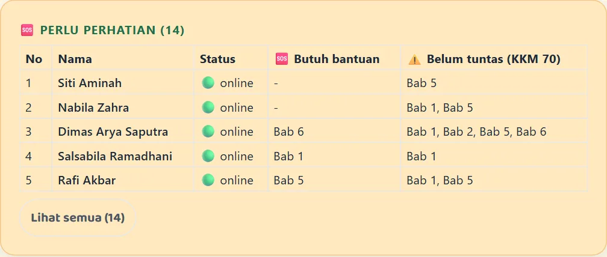
Perlu perhatian: siapa yang tersendat dan di bab mana.Needs attention: who is stuck, and in which chapter.
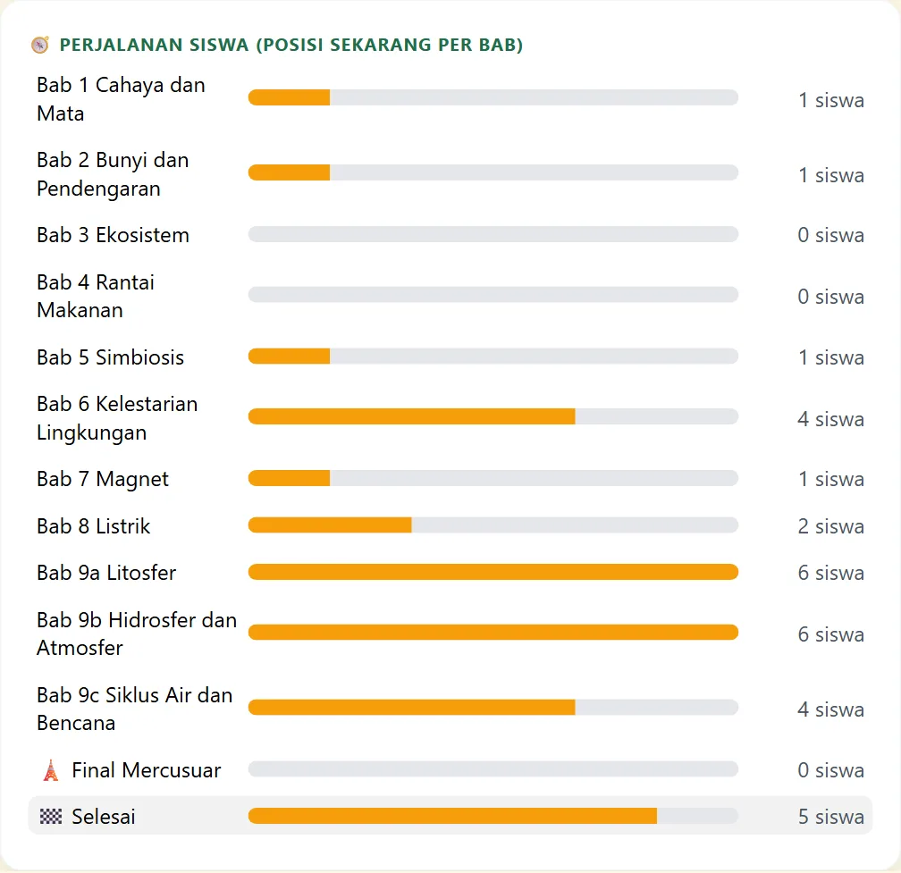
Perjalanan siswa: berapa anak di tiap bab saat ini.Student journey: how many children are in each chapter right now.
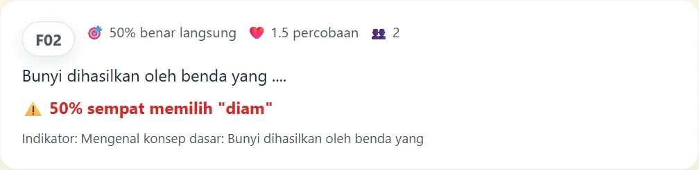
Miskonsepsi: pilihan salah yang paling sering dipilih.Misconceptions: the wrong choice picked most often.
Nama di gambar berasal dari Kelas Contoh bawaan game (data uji coba), bukan siswa nyata.
Names in these images come from the game's built-in Sample Class (test data), not real students.
Cara penilaianHow scoring works
Nilai resmi diambil dari percobaan pertama.The official score comes from the first attempt.
Benar di kesempatan ke-1, ke-2, ke-3 bernilai 1; 0,5; 0,25.Correct on the 1st, 2nd, or 3rd try scores 1, 0.5, or 0.25.
Nilai akhir 0 sampai 100: 60% rata-rata balai + 40% Final.Final grade 0 to 100: 60% hall average + 40% finale.
KKM bawaan 70, bisa diubah guru di dasbor.Default pass mark is 70, adjustable on the dashboard.
Data yang bisa diolahData you can work with
Tiga tab: Kelas, Soal, Siswa (detail, nilai per bab, rekomendasi).Three tabs: Class, Questions, Students (details, chapter scores, recommendations).
Ekspor CSV Kelas dan CSV Jawaban (satu baris per jawaban) untuk analisis butir soal di Excel.Export Class CSV and Answers CSV (one row per answer) for item analysis in Excel.
Bila server dimulai ulang, ruang kelas dibangun lagi dari browser guru dan siswa tersambung otomatis.If the server restarts, the class is rebuilt from the teacher's browser and students reconnect automatically.
Nilai keislaman dan kemuhammadiyahanIslamic and Muhammadiyah values
Bukan bagian tersendiri, tetapi hadir di setiap pertemuan dengan Penjaga.
Not a separate chapter: they appear in every meeting with a Guardian.
Salam di setiap pertemuanA greeting of salam at every meeting
Basmalah sebelum tantanganBasmalah before each challenge
Hamdalah setelah lulusHamdalah after passing
Tadabbur alamReflecting on nature (tadabbur)
Manusia sebagai khalifah penjaga bumiPeople as caretakers (khalifah) of the earth
Ilmu untuk menolong sesamaKnowledge used to help others
Bagaimana AI dipakaiHow AI was used
Platform AI: Claude (Anthropic). AI dipakai sebagai alat bantu ide, naskah, kode, dan pengujian. Keputusan
desain dan pemeriksaan materi ada pada guru.
AI platform: Claude (Anthropic). AI was used as a helper for ideas, writing, code, and testing. Design decisions
and checking the material stayed with the teacher.
Dibantu AIHelped by AI
Rancangan alur: pola misi 6 tahap, Halaman Cerita, kuis dalam percakapan, Final, dasbor guruGame flow design: the 6-step mission pattern, Story Pages, quizzes in dialogue, the finale, the teacher dashboard
Mengemas materi menjadi 44 adegan cerita dan petunjuk soal yang merujuk adeganTurning the material into 44 story scenes and hints that point back to scenes
Kode game, ilustrasi SVG, dan cutsceneGame code, SVG illustrations, and cutscenes
Uji otomatis: uji unit, uji satu balai penuh, uji multiplayer, uji FinalAutomated tests: unit tests, a full-hall run, multiplayer, and the finale
Diputuskan guruDecided by the teacher
Judul, urutan balai mengikuti bab buku, sembilan Penjaga, nama tokoh bernuansa NusantaraThe title, halls in textbook order, nine Guardians, character names with a Nusantara feel
Narasi suara, cara kerja mode kelas, dan batas lulus Final 70%Voice narration, how class mode works, and the 70% finale pass mark
Bank soal dan materi asal dari versi sebelumnyaThe question bank and source material from the earlier version
Persetujuan nilai keislaman yang dimasukkanApproving the Islamic values included
Kunci jawaban diperiksa otomatis dengan npm run verify:bank: setiap kunci ada tepat satu kali di
pilihan, tidak ada soal ganda, dan Final tepat 30 soal. Tidak ada nama atau data murid yang dimasukkan ke AI.
Answer keys are checked automatically with npm run verify:bank: every key appears exactly once
among the options, no duplicate questions, and the finale has exactly 30. No student names or data were given
to the AI.
Mode sendiri tidak mengirim data ke mana pun; progres disimpan di perangkat. Mode kelas mengirim nama
panggilan, posisi, dan ringkasan belajar ke server kelas selama sesi, disimpan di memori server, dan tidak
dibagikan ke pihak ketiga. Guru dianjurkan meminta siswa memakai nama panggilan.
Solo mode sends no data anywhere; progress stays on the device. Class mode sends a nickname, position, and a
learning summary to the class server during the session. It is kept in server memory and never shared with
third parties. Teachers are encouraged to have students use nicknames.
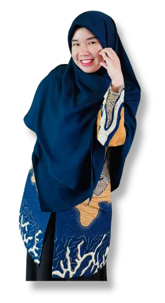
Dibuat olehMade by
Rosyitania Yudha Astari, S.Pd
SD Muhammadiyah Wonorejo Polokarto
Karya untuk Lomba Guru Pembuatan Game Edukasi Berbasis AI bagi Guru Muhammadiyah se-Cabang Blimbing, dalam
rangka Hari Guru Nasional dan Milad Muhammadiyah (2026).
Entry for the AI-Based Educational Game Competition for Muhammadiyah Teachers of the Blimbing Branch, held
for National Teachers' Day and the Muhammadiyah Anniversary (2026).